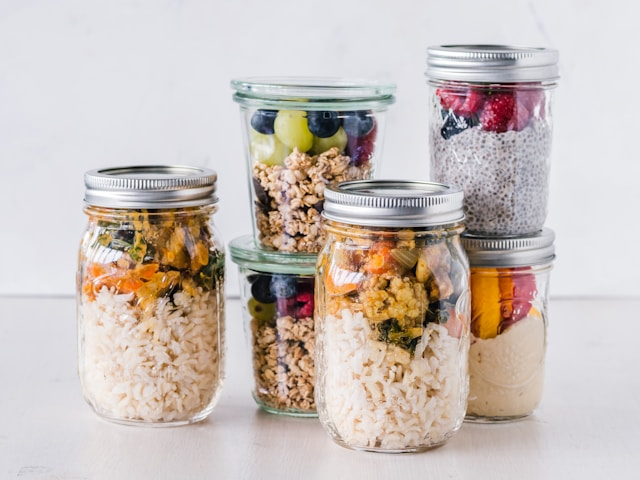
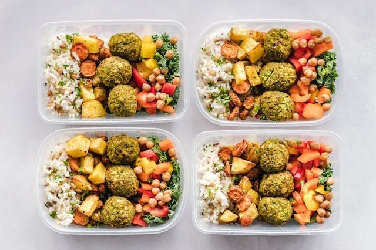

Nutrition
Purpose
- So why is nutrition so important you may ask???
Nutrition plays a critical role in maintaining overall health and well-being. It is essential for several reasons:

Diet
- With so many options available, diets vary to cater to different nutritional needs or
preferences.
So what type of diets are available today???
Macros
- So how does macronutrients and tracking my nutritional intake work???
Macronutrients include proteins, fats, and carbohydrates which are essential for the body's growth, development, and overall health.
They provide the energy necessary for various bodily functions and play a crucial role in weight management and muscle building...
- Macronutrients for Weight Loss or Muscle Gain
Recipes
Eating healthy is a goal for many individuals, and having access to a variety of nutritious recipes can make this lifestyle choice easier and more enjoyable. Tap the image above to be redirected to some of our favourite recipes that cater to different dietary needs and preferences.
Macro Calculator
A macro calculator is a tool designed to help individuals determine the optimal proportion of macronutrients—proteins, carbohydrates, and fats—they should consume daily based on their specific health and fitness goals. These goals can include weight loss, muscle gain, or maintenance of current weight.

Meal Plan
A well-structured meal plan is essential for achieving fitness goals, whether it's building muscle, losing fat, or improving overall health. The focus should be on consuming a variety of nutrient-rich foods across different food groups while managing calorie intake based on individual needs. Click on the image above to access your free 21 day meal prep guide with recipes.